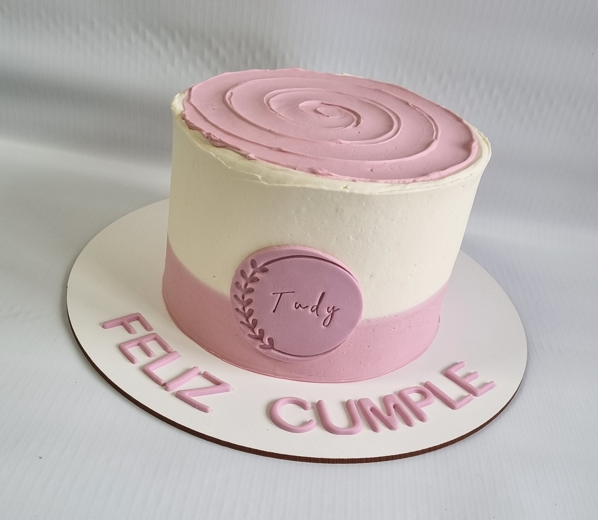
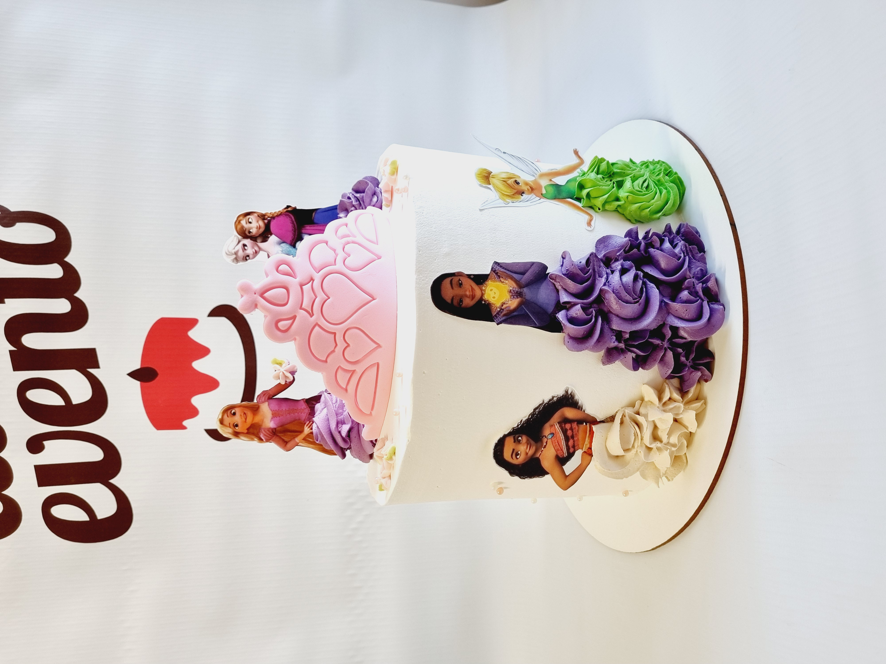
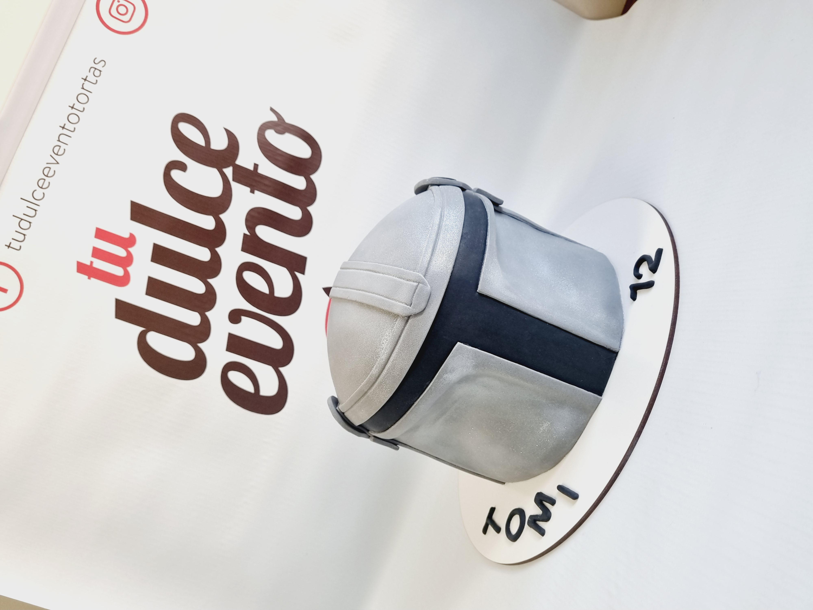

Decoración Simple

Una opción clásica y económica, ideal para quienes buscan una presentación sobria. Incluye detalles básicos, bordes simples y colores planos.
Ideal para: tortas caseras, eventos familiares, cumpleaños infantiles.
Decoración Media

Un nivel intermedio con más detalles y colores. Incluye flores, figuras básicas o texturas. Es una excelente opción para tortas personalizadas sin exceder el presupuesto.
Ideal para: celebraciones temáticas, tortas con nombres o edades.
Decoración Premium

Nuestra opción más completa, con acabados de lujo, modelado de figuras, uso de técnicas avanzadas y detalles personalizados según el evento.
Ideal para: bodas, aniversarios, eventos especiales y tortas de alto impacto visual.